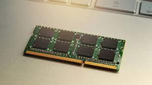

RAM (Random Access Memory) is the hardware in a computing device where the operating system (OS),
application programs and data in current use are kept so they can be quickly reached by the device's pr
ocessor. RAM is the main memory in a computer.
Dynamic random-access memory (dynamic RAM or DRAM) is a type of random-access semiconductor memory
that stores each bit of data in a memory cell, usually consisting of a tiny capacitor and a transistor.

t is the abbreviation of static random-access memory, which is a type of semiconductor random-access
memory. It stores each bit by adopting bistable latching circuitry (flip-flop).